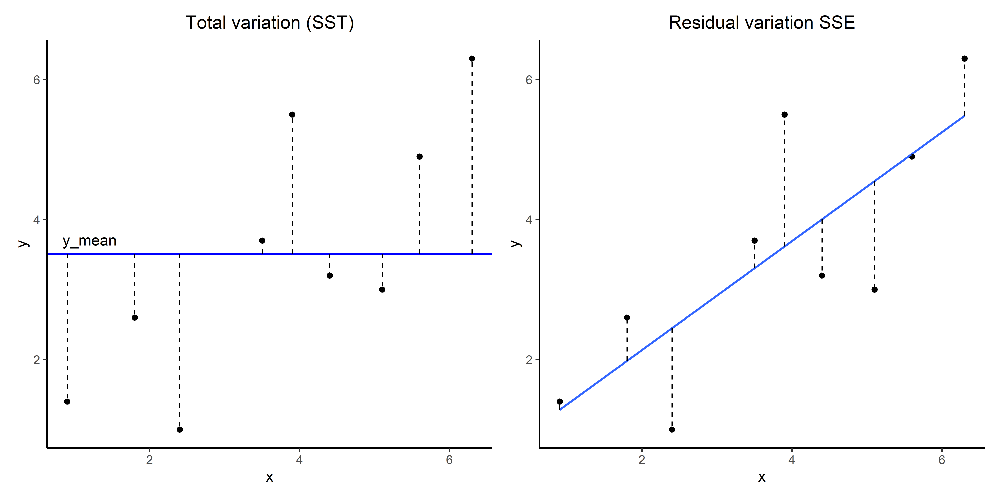
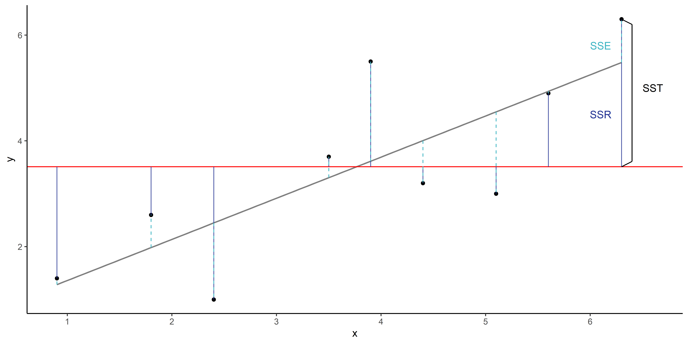
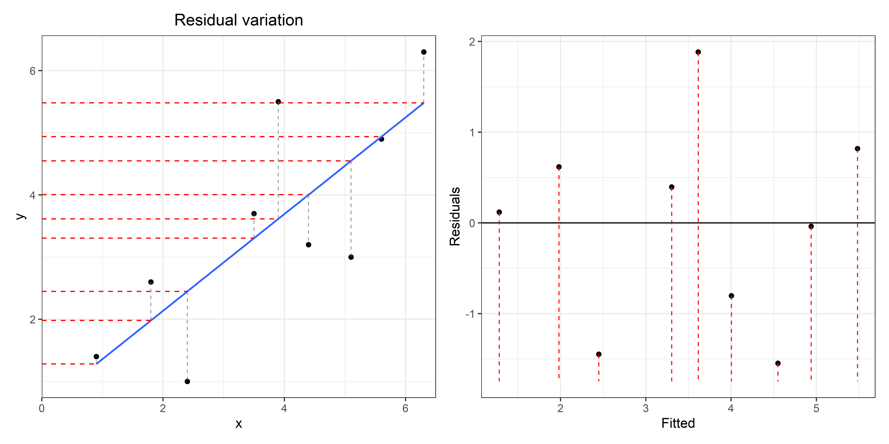
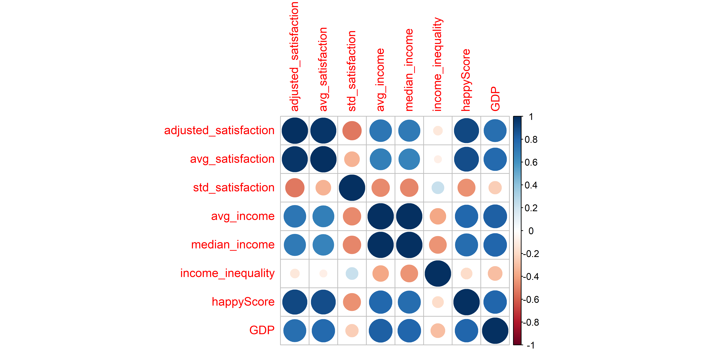

Язык программирования R для анализа данных: лекция 10
Множественная линейная регрессия
Вспомним материал предыдущей лекции
Что такое ковариация? Что такое коэффициент корреляции?
Ковариация – это мера совместной изменчивости двух случайных величин
Коэффициент корреляции – это статистическая мера степени, в которой изменения значения одной переменной предсказывают изменение значения другой.
Какие задачи можно решить с помощью линейной регрессии?
Предсказание значений одной переменной на основании другой
Коэффициент детерминации
Ограничения линейной регрессии
План лекции
Что такое коэффициент детерминации и как он выводится?
Множественная линейная регрессия
Проблема мультиколлинеарности
Отбор моделей
Ограничения линейной регрессии
Загрузим нужные библиотеки:
Коэффициент детерминации: формула
Обозначается как \(R^2\) – доля объясненной дисперсии.
\[ R^2 = \frac{SSR}{SST} \]
\(SSR = \sum_i{(\hat{y_i}-\overline{y})^2}\) - объясненная моделью дисперсия.
\(SSE = \sum{(y_i - \hat{y_i})^2}\) - необъясненная дисперсия.
\(SST = SSR + SSE = \sum_i{(y_i-\overline{y})^2}\) - общая дисперсия.
Объясненную моделью дисперсию можно вычислить как разницу между общей дисперсией и необъясненной дисперсией (\(SSR = SST - SSE\)).
Разберем на рисунке:
Коэффициент детерминации: график
Коэффициент детерминации: расчет
df <- data.frame(
x=c(0.9, 1.8, 2.4, 3.5, 3.9, 4.4, 5.1, 5.6, 6.3),
y=c(1.4, 2.6, 1.0, 3.7, 5.5, 3.2, 3.0, 4.9, 6.3))
sst <- sum((df$y - mean(df$y))^2) # общая сумма квадратов, SST
ssr <- sst - sum((df$y - predict(model, data.frame(x = df$x)))^2)
r2 <- ssr / sst
r2[1] 0.6132867
Call:
lm(formula = y ~ x, data = df)
Residuals:
Min 1Q Median 3Q Max
-1.5482 -0.8037 0.1186 0.6186 1.8852
Coefficients:
Estimate Std. Error t value Pr(>|t|)
(Intercept) 0.5813 0.9647 0.603 0.5658
x 0.7778 0.2334 3.332 0.0126 *
---
Signif. codes: 0 '***' 0.001 '**' 0.01 '*' 0.05 '.' 0.1 ' ' 1
Residual standard error: 1.19 on 7 degrees of freedom
Multiple R-squared: 0.6133, Adjusted R-squared: 0.558
F-statistic: 11.1 on 1 and 7 DF, p-value: 0.01256Коэффициент детерминации
Множественная линейная регрессия
Как собирать данные?
Важно помнить, что Garbage in - Garbage out.

Независимость наблюдений.
Проверка на наличие скрытых (группирующих) переменных.
Учет пространственных и временных автокорреляций.
Данные для работы
happy_score_data <- read_csv('https://raw.githubusercontent.com/ubogoeva/Rcourse_NSU/master/posts/lectures/data/happyscore_income.csv')
happy_score_data <- happy_score_data %>%
rename(country = country...1) %>%
select(!country...11)
head(happy_score_data)# A tibble: 6 × 10
country adjusted_satisfaction avg_satisfaction std_satisfaction avg_income
<chr> <dbl> <dbl> <dbl> <dbl>
1 Armenia 37 4.9 2.42 2097.
2 Angola 26 4.3 3.19 1449.
3 Argentina 60 7.1 1.91 7101.
4 Austria 59 7.2 2.11 19457.
5 Australia 65 7.6 1.8 19917
6 Azerbaijan 46 5.8 2.27 3382.
# ℹ 5 more variables: median_income <dbl>, income_inequality <dbl>,
# region <chr>, happyScore <dbl>, GDP <dbl>Датасет с каггла о связи ВВП и счастья населения.
Формулировка множественной линейной регрессии
\[ Y = \beta_0 + \beta_1x_1 + \beta_2x_2 + ... + \beta_nx_n + \epsilon \]
Попробуем предсказать happyScore, основываясь на остальных переменных и выберем лучшую модель.
Смысл коэффициентов во множественной линейной модели
Интерсепт - значение зависимой переменной, когда все независимые равны нулю.
Коэффициент перед предиктором: показывает на сколько единиц изменится значение зависимой переменной в случае, если значение этого предиктора изменится на единицу, а все другие показатели не изменятся.
Геометрический смысл
Для двух коэффициентов теперь фитим (подгоняем) плоскость в трехмерном пространстве.
\(Y = \beta_0 + \beta_1x_1 + \beta_2x_2 + \epsilon\)

Для большего количества предикторов невозможно нарисовать :(
Нотация формул линейных моделей в R
| Модель | Формула |
|---|---|
| Простая линейная регрессия | Y ~ X |
| Простая линейная регрессия, без интерсепта b0 | Y ~ -1 + X |
| Уменьшенная простая линейная регрессия (только интерсепт) | Y ~ 1 Y ~ 1 - X |
| Множественная линейная регрессия | Y ~ X1 + X2 |
Нотация формул линейных моделей в R
| Элемент формулы | Значение |
|---|---|
| : | Взаимодействие предикторов Y ~ X1 + X2 + X1:X2 |
| * | Все возможные взаимодействия Y ~ X1*X2 тоже самое, что и |
| . | Y ~ . В правой части формулы записываются все переменные из датафрейма, кроме Y |
Условия применимости множественной линейной регрессии
Линейная связь (=отсутствие паттерна на графике остатков).
Независимость наблюдений.
Гомогенность дисперсий.
Нормально распределение ошибок (остатков).
Отсутствие влиятельных наблюдений.
Отсутствие коллинеарности предикторов (для множественной регрессии)
Все условия совпадают с требованиями к простой линейной регрессии + проверка на коллинеарность.
Note
Вообще перечисленные выше условия применимости совпадают и с многими другими статистическими тестами (и это не случайно!)
График остатков
Такой вариант графика позволяет оценивать паттерны распределения остатков для нескольких независимых переменных.
Влиятельные наблюдения - выбросы, аутлайеры
Оцениваются с помощью расстояния Кука
\[ D_i = \frac{\sum{( \color{blue}{\hat{y_{j}}} - \color{red}{\hat{y}_{j(i)}})^2}}{p \; MS_e} \]
\(\color{blue}{\hat{y_j}}\) — значение, предсказанное полной моделью.
\(\color{red}{\hat{y}_{j(i)}}\) — значение, предсказанное моделью, построенной без учета \(i\)-го значения предиктора
\(p\) — количество параметров в модели
\(MS_{e}\) — среднеквадратичная ошибка модели (\(\hat\sigma^2\))
Пороговое значение можно рассчитать по формуле, но вообще существуют разные способы выбора порога:
\[ Cutoff = \frac{4}{ n - p} \]
Формулы могут быть разные еще и потому, учитывают они интерсепт как оцениваемый параметр или нет.
Давайте построим модель
Предсказание цены дома в зависимости от всех количественных переменных. Сначала отберем все численные переменные (можно строить модель и с дискретными предикторами, но пока построим так) и включим их в модель.
happy_score_data_numeric <- happy_score_data %>% select(where(is.numeric))
model_full <- lm(happyScore ~ ., happy_score_data_numeric)
summary(model_full)
Call:
lm(formula = happyScore ~ ., data = happy_score_data_numeric)
Residuals:
Min 1Q Median 3Q Max
-1.23723 -0.28006 0.01552 0.28669 1.07112
Coefficients:
Estimate Std. Error t value Pr(>|t|)
(Intercept) 2.2183187 2.2722660 0.976 0.331
adjusted_satisfaction 0.0455447 0.1234767 0.369 0.713
avg_satisfaction 0.1497964 1.0164274 0.147 0.883
std_satisfaction -0.0573383 1.0729419 -0.053 0.957
avg_income 0.0001944 0.0001290 1.507 0.135
median_income -0.0001814 0.0001491 -1.217 0.226
income_inequality -0.0085178 0.0099008 -0.860 0.392
GDP 0.2758183 0.2600976 1.060 0.291
Residual standard error: 0.4665 on 103 degrees of freedom
Multiple R-squared: 0.8538, Adjusted R-squared: 0.8439
F-statistic: 85.96 on 7 and 103 DF, p-value: < 2.2e-16Интерпретация результатов
Все предикторы незначимы, при этом сама модель значима (p-value модели < 0.05). Это говорит о том, что в данных скорее всего есть мультиколлинеарность (про это чуть дальше).
Вопрос в том, что лучше, включить больше или меньше предикторов в модель?
Опасность переобучения (overfitting) -> нарисовать
Adjusted R-squared
Модель с бОльшим числом предикторов почти всегда будет иметь больший \(R^2\). Нужно ввести поправочный коэффициент, который штрафует модель за бОльшее число предикторов.
\[ R^2_{adj} = 1- (1-R^2)\frac{n-1}{n-p} \]
p - количество параметров в модели, n - размер выборки.
Кроме этого, для отбора количества предикторов модели существует AIC (информационный критерий Акаике) и BIC (байесовский информационный критерий).
Проблема мультиколлинеарности
Мультиколлинеарность — наличие линейной зависимости между независимыми переменными в регрессионной модели.
При наличии мультиколлинеарности оценки параметров неточны, увеличиваются стандартные ошибки, а значит сложно интерпретировать влияние предикторов на отклик.
Variance inflation factor для оценки мультиколлинеарности
Для предиктора \(i\) считается линейная регрессия, где все остальные предикторы предсказывают предиктор \(i\).
Сам VIF-фактор считается на основе полученного R2 регрессии:
\[ VIF = \frac{1}{1 - R_i^2} \]
Чем больше \(R_i^2\), тем больше \(VIF_i\). Это означает, что предиктор сам по себе хорошо объясняется другими предикторами. Какой VIF считать большим? Здесь нет единого мнения, но если он выше 3 (4, 5) и особенно если он выше 10, то с этим нужно что-то делать.
Подсчет VIF
VIF можно посчитать с помощью функции vif() из пакета car.
adjusted_satisfaction avg_satisfaction std_satisfaction
1178.079600 960.731610 58.304736
avg_income median_income income_inequality
353.275696 350.629194 3.475757
GDP
5.136846 Здесь конечно экстремальная ситуация в связи с крайне высокой корреляцией переменных. Это видно и при подсчете матрицы корреляций, так что для реальной задачи не очень разумно включать сразу все переменные в модель, не проверив корреляции.
Как вариант, можно заменить исходные предикторы новыми ортогональными переменными с помощью метода главных компонент (PCA).
Подсчет VIF

Отбор коррелирующих предикторов на основании VIF
С помощью базовой функции update() можно убирать сильно коррелирущие предикторы.
avg_satisfaction std_satisfaction avg_income median_income
3.013224 1.498450 348.649164 345.961439
income_inequality GDP
3.447902 5.113941
Call:
lm(formula = happyScore ~ avg_satisfaction + std_satisfaction +
avg_income + median_income + income_inequality + GDP, data = happy_score_data_numeric)
Residuals:
Min 1Q Median 3Q Max
-1.22844 -0.28686 0.00393 0.29576 1.05390
Coefficients:
Estimate Std. Error t value Pr(>|t|)
(Intercept) 3.0295472 0.5687129 5.327 5.81e-07 ***
avg_satisfaction 0.5241200 0.0566865 9.246 3.25e-15 ***
std_satisfaction -0.4479771 0.1712908 -2.615 0.0102 *
avg_income 0.0001890 0.0001276 1.480 0.1418
median_income -0.0001751 0.0001475 -1.187 0.2379
income_inequality -0.0081909 0.0098200 -0.834 0.4061
GDP 0.2822246 0.2584369 1.092 0.2773
---
Signif. codes: 0 '***' 0.001 '**' 0.01 '*' 0.05 '.' 0.1 ' ' 1
Residual standard error: 0.4646 on 104 degrees of freedom
Multiple R-squared: 0.8537, Adjusted R-squared: 0.8452
F-statistic: 101.1 on 6 and 104 DF, p-value: < 2.2e-16Теперь сильно коррелируют avg_income и median_income, что логично и было видно на корреляционном графике. Уберем одну из этих переменных.
Отбор коррелирующих предикторов на основании VIF
model_without_avg_income <- update(model_without_adj, .~. -avg_income)
vif(model_without_avg_income) avg_satisfaction std_satisfaction median_income income_inequality
3.000833 1.483673 4.111098 1.412751
GDP
4.530807
Call:
lm(formula = happyScore ~ avg_satisfaction + std_satisfaction +
median_income + income_inequality + GDP, data = happy_score_data_numeric)
Residuals:
Min 1Q Median 3Q Max
-1.22061 -0.27108 0.02655 0.30850 1.09323
Coefficients:
Estimate Std. Error t value Pr(>|t|)
(Intercept) 2.605e+00 4.940e-01 5.274 7.21e-07 ***
avg_satisfaction 5.295e-01 5.689e-02 9.307 2.19e-15 ***
std_satisfaction -4.732e-01 1.714e-01 -2.760 0.00681 **
median_income 4.193e-05 1.617e-05 2.594 0.01084 *
income_inequality 2.978e-03 6.321e-03 0.471 0.63860
GDP 4.114e-01 2.446e-01 1.682 0.09559 .
---
Signif. codes: 0 '***' 0.001 '**' 0.01 '*' 0.05 '.' 0.1 ' ' 1
Residual standard error: 0.4672 on 105 degrees of freedom
Multiple R-squared: 0.8506, Adjusted R-squared: 0.8435
F-statistic: 119.5 on 5 and 105 DF, p-value: < 2.2e-16Отбор моделей
Есть несколько основных стратегий отбора
- Backward selection: full null -> null model
- Forward selection: null model -> full model
- Mixed selection: комбинация 1 и 2 способа
Уберем незначимые предикторы из модели: income_inequality
model_without_ineq <- update(model_without_avg_income, .~. -income_inequality)
vif(model_without_ineq)avg_satisfaction std_satisfaction median_income GDP
2.689961 1.479161 3.636432 4.479075
Call:
lm(formula = happyScore ~ avg_satisfaction + std_satisfaction +
median_income + GDP, data = happy_score_data_numeric)
Residuals:
Min 1Q Median 3Q Max
-1.2107 -0.2632 0.0361 0.2976 1.0923
Coefficients:
Estimate Std. Error t value Pr(>|t|)
(Intercept) 2.683e+00 4.641e-01 5.781 7.56e-08 ***
avg_satisfaction 5.381e-01 5.366e-02 10.028 < 2e-16 ***
std_satisfaction -4.687e-01 1.705e-01 -2.749 0.00703 **
median_income 3.935e-05 1.515e-05 2.597 0.01073 *
GDP 3.991e-01 2.423e-01 1.647 0.10255
---
Signif. codes: 0 '***' 0.001 '**' 0.01 '*' 0.05 '.' 0.1 ' ' 1
Residual standard error: 0.4655 on 106 degrees of freedom
Multiple R-squared: 0.8503, Adjusted R-squared: 0.8446
F-statistic: 150.5 on 4 and 106 DF, p-value: < 2.2e-16Уберем незначимые предикторы из модели: GDP
model_without_gdp <-lm(happyScore ~ avg_satisfaction +
std_satisfaction + median_income,
data = happy_score_data_numeric)
vif(model_without_gdp)avg_satisfaction std_satisfaction median_income
1.781739 1.303235 2.049282
Call:
lm(formula = happyScore ~ avg_satisfaction + std_satisfaction +
median_income, data = happy_score_data_numeric)
Residuals:
Min 1Q Median 3Q Max
-1.25075 -0.20623 0.01447 0.29152 1.12332
Coefficients:
Estimate Std. Error t value Pr(>|t|)
(Intercept) 2.423e+00 4.399e-01 5.508 2.52e-07 ***
avg_satisfaction 5.895e-01 4.402e-02 13.390 < 2e-16 ***
std_satisfaction -3.719e-01 1.613e-01 -2.305 0.0231 *
median_income 5.583e-05 1.146e-05 4.871 3.87e-06 ***
---
Signif. codes: 0 '***' 0.001 '**' 0.01 '*' 0.05 '.' 0.1 ' ' 1
Residual standard error: 0.4692 on 107 degrees of freedom
Multiple R-squared: 0.8464, Adjusted R-squared: 0.8421
F-statistic: 196.6 on 3 and 107 DF, p-value: < 2.2e-16Модель с дискретными предикторами
model_region <- lm(happyScore ~ avg_satisfaction + median_income + region, data = happy_score_data)
summary(model_region)
Call:
lm(formula = happyScore ~ avg_satisfaction + median_income +
region, data = happy_score_data)
Residuals:
Min 1Q Median 3Q Max
-1.4556 -0.2485 0.0000 0.2774 1.1139
Coefficients:
Estimate Std. Error t value Pr(>|t|)
(Intercept) 1.778e+00 6.883e-01 2.584 0.0112
avg_satisfaction 4.997e-01 7.021e-02 7.117 1.76e-10
median_income 1.078e-04 2.351e-05 4.585 1.33e-05
region'Central and Eastern Europe' 2.236e-01 5.403e-01 0.414 0.6798
region'Eastern Asia' -1.113e-01 5.877e-01 -0.189 0.8501
region'Latin America and Caribbean' 5.088e-01 5.661e-01 0.899 0.3710
region'Middle East and Northern Africa' 1.936e-01 5.750e-01 0.337 0.7371
region'North America' -2.010e-01 5.818e-01 -0.346 0.7304
region'Southeastern Asia' 1.170e-01 5.850e-01 0.200 0.8419
region'Southern Asia' 1.664e-02 6.040e-01 0.028 0.9781
region'Sub-Saharan Africa' 1.272e-01 5.801e-01 0.219 0.8269
region'Western Europe' -2.708e-01 4.871e-01 -0.556 0.5795
(Intercept) *
avg_satisfaction ***
median_income ***
region'Central and Eastern Europe'
region'Eastern Asia'
region'Latin America and Caribbean'
region'Middle East and Northern Africa'
region'North America'
region'Southeastern Asia'
region'Southern Asia'
region'Sub-Saharan Africa'
region'Western Europe'
---
Signif. codes: 0 '***' 0.001 '**' 0.01 '*' 0.05 '.' 0.1 ' ' 1
Residual standard error: 0.4742 on 99 degrees of freedom
Multiple R-squared: 0.8549, Adjusted R-squared: 0.8387
F-statistic: 53.02 on 11 and 99 DF, p-value: < 2.2e-16Спасибо за внимание!
Если понравилось, переходите по ссылке: